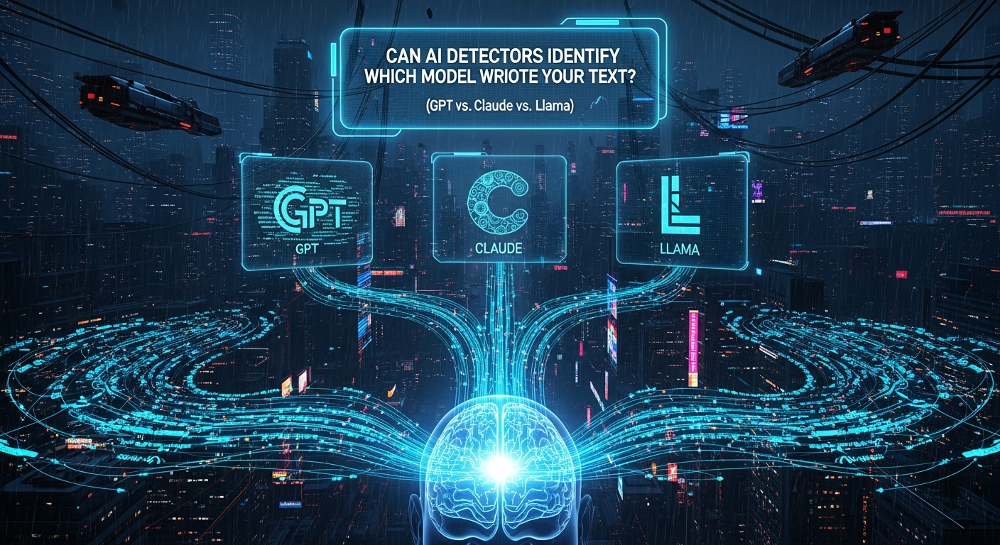

In the digital crucible of the 21st century, a new kind of forensics is emerging. It's not about dusting for fingerprints on a keyboard, but about scanning for the ethereal fingerprints of artificial intelligence within a block of text. As generative AI models like OpenAI's GPT series, Anthropic's Claude, and Meta's Llama become increasingly sophisticated co-authors, collaborators, and even ghostwriters, a critical question follows in their wake: can we tell them apart? The arms race is no longer just about creating more powerful AI; it's about understanding, identifying, and attributing its output. This isn't merely an academic curiosity. For educators grappling with AI-assisted plagiarism, for businesses protecting their brand voice, and for journalists verifying sources, knowing whether a text was written by a human is only the first step. The more granular question—which specific digital mind conceived these words?—is becoming increasingly vital. Can today's AI detection tools rise to the challenge, or are they merely digital dowsing rods, twitching at the presence of AI but unable to name the source of the spring?
Before we can assess if a detector can differentiate a Llama from a Claude, we must first dissect the detector itself. These tools are not magical black boxes; they are sophisticated statistical analyzers built on a few core principles. Their primary goal is not to comprehend the text's meaning but to measure its mathematical properties against established patterns of human and machine-generated writing. The two most fundamental metrics at play are perplexity and burstiness, and understanding them is key to understanding the limitations of AI detection.
Perplexity is, in essence, a measure of predictability. Imagine you're reading a sentence: "The cat sat on the ___." Your brain instantly suggests "mat," "couch," or "floor." A text with low perplexity follows these highly predictable patterns, using common word choices and sentence structures. Early AI models were champions of low perplexity; their writing was often bland, repetitive, and filled with the most statistically probable words, making it easy to spot. An AI detector's algorithm analyzes a given text and calculates how "surprised" it is by the sequence of words. If the words are all too common, too expected, it's like walking down a perfectly paved, straight road—a hallmark of machine efficiency. Human writing, by contrast, tends to have higher perplexity. We use unexpected metaphors, employ varied vocabulary, and take syntactic detours, creating a path that is more winding and surprising for the algorithm to follow.
The second pillar is burstiness. This refers to the rhythm and flow of the writing, specifically the variation in sentence length and structure. Humans write in bursts. We might fire off a few short, punchy sentences, follow up with a long, complex one full of clauses, and then return to something simple. This creates a jagged, uneven rhythm, like a dynamic piece of music with shifts in tempo and volume. AI, particularly without specific instruction, can fall into a monotonous cadence. It might produce a series of sentences that are all of similar length and structure, creating a flat, metronomic feel. AI detectors measure this variation. A text with high burstiness (lots of variety) is deemed more human-like, while a text with low burstiness (very uniform) raises a red flag. These tools essentially analyze the text's waveform, looking for the chaotic, unpredictable peaks and valleys of human expression versus the smooth, consistent sine wave of a machine.
The critical weakness, however, lies in their training data. These detectors are themselves AI models, typically classifiers trained on enormous datasets. One part of the dataset is a massive corpus of human writing (e.g., web text, books, scientific papers). The other part is a collection of AI-generated text. But which AI? Often, they are trained on the outputs of older models like GPT-3 or early versions of GPT-4. This means they become very good at spotting the specific statistical habits of *those* models. When a new, more advanced model like Claude 3 or Llama 3 emerges, its statistical properties may be different enough to evade detection, at least initially. They are trained to find a generic "scent" of AI, not the unique DNA of a specific model family. This makes them inherently reactive, always one step behind the latest generation of language models.
If detectors are looking for patterns, then the key to differentiating models must lie in their unique patterns, or "fingerprints." While GPT, Claude, and Llama are all built upon the foundational Transformer architecture, they are not identical triplets. They are more like cousins raised in different households, shaped by different philosophies, diets, and experiences. These differences, while subtle, are the only hope for model-specific attribution, yet they are also frustratingly transient and difficult to isolate.
The first and most significant differentiator is the training data and philosophy. This is the bedrock of a model's "personality."
Next are the technical, under-the-hood differences, such as tokenization. A tokenizer is the component that breaks raw text into numerical pieces (tokens) that the model can process. Each model family uses its own bespoke tokenizer. For example, GPT-4 uses the `cl100k_base` tokenizer, while Llama uses a different one. This means they might split the same word or phrase differently. The word "unequivocally" might be one token for one model but two (`unequiv` and `ocally`) for another. While this creates a very low-level statistical difference in their output probabilities, it's an incredibly weak signal. A single edit by a human can completely disrupt this pattern, making it nearly useless for reliable detection by public-facing tools.
Finally, there's the crucial layer of Reinforcement Learning from Human (or AI) Feedback (RLHF/RLAIF). After initial training, models are fine-tuned based on feedback to make them better conversationalists. This is what polishes their default "voice." This process teaches GPT-4 its characteristic helpful but sometimes formulaic structure (e.g., "Certainly, here is..."). It's what gives Claude 3 its slightly more reflective and literary tone. It’s what allows different fine-tunes of Llama 3 to adopt wildly different personas. This RLHF layer is arguably the most significant contributor to a model's stylistic quirks, but it's also the layer most easily overridden by a user's specific instructions, turning these potential fingerprints into smudges.
Even with subtle differences in their DNA, the practical task of telling a GPT-4 paragraph from a Claude 3 Opus one is a Herculean feat, and for current public tools, it is an impossible one. The reasons for this failure are not just technical; they are fundamental to the nature of modern large language models (LLMs) and how we interact with them. The core issue is that these models are designed to be linguistic chameleons, and we, the users, are directing their camouflage.
Humanize your text and bypass any AI detector instantly with Undetectable AI.
BYPASS AI DETECTION NOWThe most significant hurdle is the overwhelming influence of the prompt. An LLM's output is not a monologue; it's a duet between the model's programming and the user's request. A simple directive like, "Write a paragraph about photosynthesis in the style of a 1920s noir detective" will force GPT-4, Claude 3, and Llama 3 to abandon their default voices and adopt a completely new persona. All the subtle statistical markers—the preferred vocabulary of their training data, the cadence instilled by their RLHF—are thrown out the window. They will all start using phrases like "the sun, that hot dame," and their sentence structures will become short and punchy. The prompt acts as a powerful equalizer, sanding away the unique textures of each model and leaving behind only the user-defined style. Since an AI detector has no knowledge of the prompt that generated the text, it cannot possibly untangle the model's contribution from the user's.
Furthermore, we are witnessing a phenomenon of model convergence. As AI research progresses, all companies are chasing the same goal: creating text that is accurate, coherent, and indistinguishable from high-quality human writing. In this race to the top, the models' outputs are becoming more similar, not less. They are all learning from similar data sources and are being optimized against similar benchmarks. The "correct" way to explain a scientific concept or summarize a historical event doesn't vary much. As they all get better, their statistical profiles for "good writing" naturally converge, blurring any lines that might have existed between them. They are all learning to sing in the same key, making it incredibly hard to identify the singer just by listening to the melody.
Finally, there is the "moving target" problem. These AI models are not static products. OpenAI, Anthropic, and Meta are constantly updating and fine-tuning them. A detector painstakingly trained to identify the statistical quirks of the March 2024 version of Claude 3 Sonnet might be completely useless against the June 2024 update. The fingerprints are constantly being wiped clean and replaced. This rapid iteration cycle means any detection model based on spotting specific patterns is doomed to be perpetually out of date. It's like trying to build a facial recognition system for a person who gets plastic surgery every month. By the time the system is deployed, the target looks completely different.
When you seek to answer the "Human vs. AI" question, you inevitably encounter a handful of prominent tools. These services form the front line of AI detection, used by universities, content agencies, and curious individuals alike. However, a closer look reveals that they are all fighting the same battle with similar weapons, and none are equipped for the specialized mission of model-specific attribution. They are the guards at the gate, trained to spot a disguise, but they cannot tell you the name of the person wearing it.
One of the most well-known is GPTZero. Birthed from a Princeton student's thesis project, it quickly gained fame for its focus on the academic sphere. GPTZero's methodology is a classic implementation of the principles we've discussed: it heavily analyzes perplexity and burstiness. It scores text based on how predictable and rhythmically uniform it is. While it can be effective at flagging simplistic, unedited AI output, its core function remains a binary classification. Its results page gives a probability score for "AI" or "Human," and may highlight sentences that are "likely AI-generated." It makes no claim, nor does it possess the underlying technology, to say, "This text has the statistical profile of Anthropic's Claude 3 family." It is a generalist tool for a general problem.
In the commercial content world, Originality.ai has carved out a niche. Marketed aggressively towards SEO professionals and web publishers, it positions itself as a more stringent and accurate detector. Its algorithm is proprietary, but it operates on the same foundational principles. Originality.ai is known for being more "trigger-happy," often flagging heavily edited or technical human writing as AI-generated, a testament to the immense difficulty of drawing a clear line. Crucially, its business model is predicated on detecting AI, not identifying its source. A customer trying to ensure their writers aren't submitting pure AI-generated articles cares if the work is original, not whether the writer used GPT-4 over Llama 3 for their first draft. Therefore, Originality.ai focuses its entire technological might on that single, difficult classification task.
Other tools, such as Content at Scale's AI Detector, Sapling, and a dozen others, populate the rest of the market. They all follow a similar blueprint. They use a classifier model trained on a large dataset of known human and AI texts to spot statistical anomalies. Imagine a hypothetical but revealing experiment:
If passive detection—analyzing text after the fact—is a losing game for model attribution, what's the alternative? The future almost certainly lies in a shift from passive forensics to active, built-in tracking. The most promising technology on this front is cryptographic watermarking. Instead of trying to find faint, unreliable fingerprints left at the scene, watermarking is like embedding a microscopic, undeniable tracking device into the text as it's being created.
Here's how it works in principle. During text generation, at each step where the model has to... and implement these strategies to ensure long-term success.
In summary, staying ahead of these trends is the key to business longevity and security. By following this guide, you maximize your growth and ensure a stable digital future.
Don't wait for the headlines. Our Private Telegram Channel delivers real-time AI security updates and digital wealth strategies before they go viral. Stay protected. Stay ahead.
⚡ JOIN THE 1% NOW